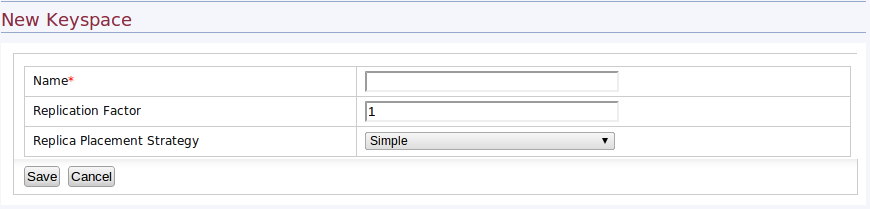
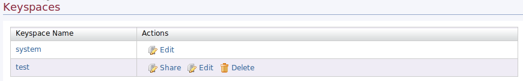
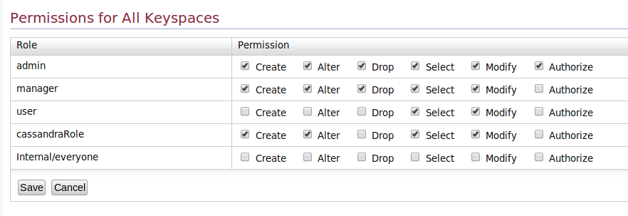
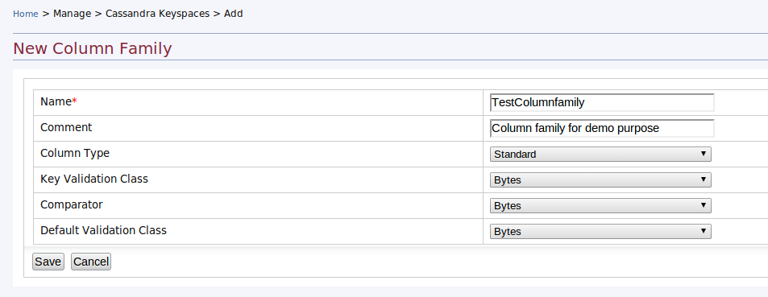
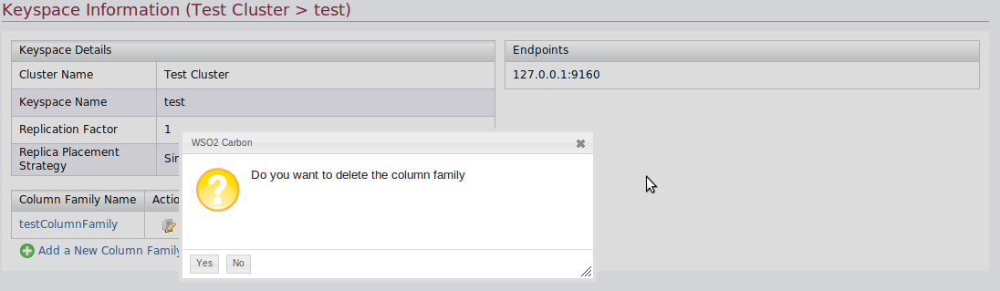
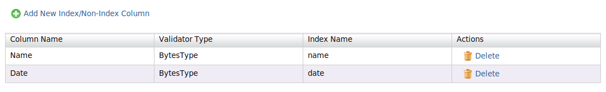
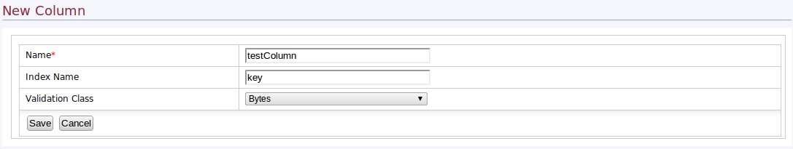
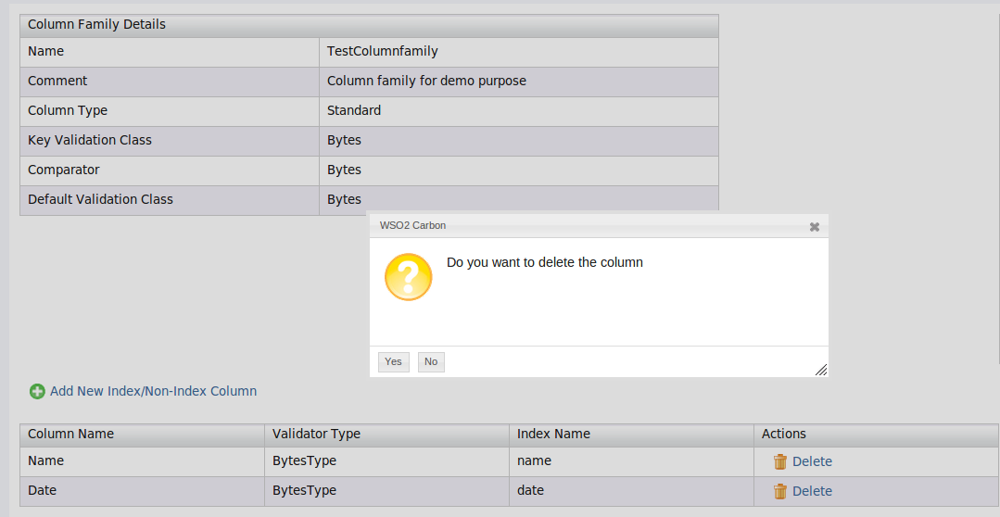

WSO2 Carbon Cassandra feature provides Apache Cassandra based highly scalable second-generation distributed database. Cassandra supports Column Family based data model.
WSO2 Carbon Cassandra helps user to create and manage NoSQL data stores with authentication and authorization. Cassandra component uses Carbon User Manager as the user base.
Cassandra feature comes with a management user interface. Management interface allows user to manage Keyspaces, Column Families and Columns.
This documentation mainly focuses on how the WSO2 Management Console can be used to easily create and maintain Keyspaces, Column Families and Columns. To get an in-depth knowledge of various Cassandra and NoSQL specific terminology refer to the Cassandra Glossary.
Keyspace management allows user to list available key spaces. User can share, edit and delete Keyspaces using interface.
Home-> Manage-> Cassandra Keyspaces-> Add

Using this window user can be add a new keyspace into the cluster.
Home-> Manage-> Cassandra Keyspaces-> List

User can be see list of keyspaces belongs to that particular user.
User can alter replication factor and replica replacement strategy.
Manage -> Cassandra Keyspaces -> List
Here, you can see the following page which allows you to manage root level permissions for each role.
Permissions can be set for each keyspace and column family using ?Set Permission? link in the Actions column of each Keyspace/Column Family.
User can delete Keyspace after the confirmation.
User can get Column Family details by click on the Keyspace name
Home-> Manage-> Cassandra Keyspaces-> List-> Keyspace

In the Column Family summery page user can list all the Column Families related to the Keyspace. Cassandra endpoint URL listed in summery page. User has to give Cassandra endpoint URL (IP:PORT) and the username and password in the connection string.
User can add more columns to the keyspace by clicking Add a New Column Family link.
Column Family Edit allows user to modify Name, Replication Factor and Replica Placement Strategy of a Column Family.
User can delete Column Family after the confirmation.
User can list Column Family summery and manage Columns in Column Family page.
Home-> Manage-> Cassandra Keyspaces-> List-> Keyspace-> Column Family

Add new Column option allows user to add a Column to Column Family and set a Index Column and the validation class. In Cassandra Index Column use to create a second index.
User can delete a Column after the confirmation.
